Battery aging represents one of the most critical yet underappreciated economic factors shaping Battery Energy Storage Systems (BESS) project viability through tender cycles and Power Purchase Agreements. As batteries degrade over their operational lives, capacity fade directly erodes revenue streams, threatens debt repayment, and introduces uncertainty into long-term commercial arrangements. Understanding how aging mechanisms influence tender specifications, pricing models, and contract structures is essential for developers, financiers, and investors navigating the increasingly mature BESS market.
The Dual Mechanisms of Battery Aging
Battery degradation operates through two distinct but interconnected processes that demand careful management in tender specifications and PPA terms. Cycle aging results from repeated charge and discharge operations, with factors like depth of discharge (DoD), charging rates, and electrical stress accelerating capacity loss. Calendar aging, by contrast, occurs independently of usage patterns, driven by time-dependent electrochemical reactions within the battery. Research indicates that calendar aging can account for up to 50% of capacity loss in some grid storage devices, making it particularly relevant for PPAs that extend 10-20 years.
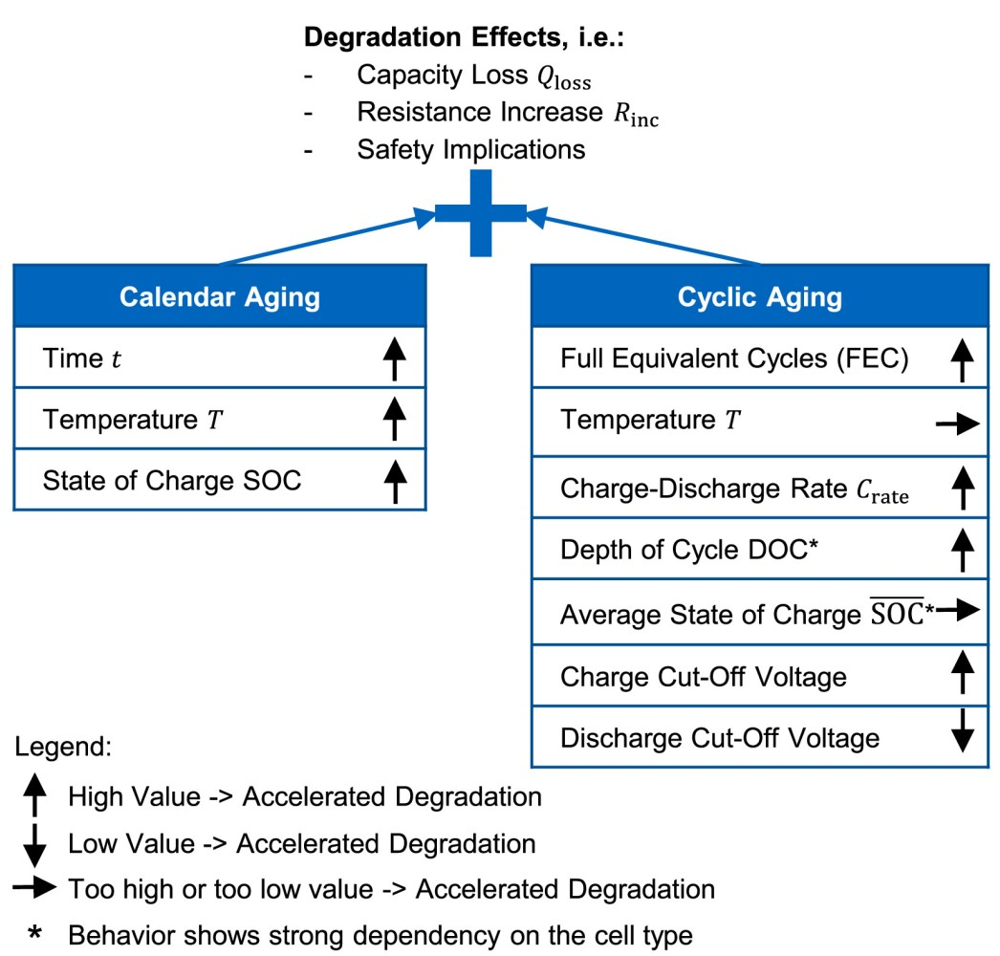
Temperature emerges as the dominant environmental stressor affecting both mechanisms. Studies show that capacity fade increases dramatically with elevated temperatures, with cells cycled at 55°C exhibiting substantially reduced lifespans compared to those operated at 25°C. For lithium-iron-phosphate (LFP) batteries—increasingly dominant in utility-scale BESS—calendar life drops to just 5-6 years when stored at 35-40°C, collapsing to 1-2 years above 45°C. This temperature sensitivity creates significant regional and operational complexity in tender design and PPA performance guarantees.
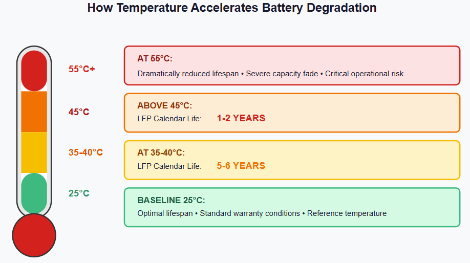
Aging and Tender Technical Specifications
Modern BESS tenders incorporate increasingly sophisticated degradation specifications that directly impact bid evaluation and financial viability. The industry standard defines end-of-life when usable capacity falls below 80% of original nominal capacity, though some tenders specify higher retention targets. This threshold fundamentally shapes how developers must structure their financial bids and technology selections.
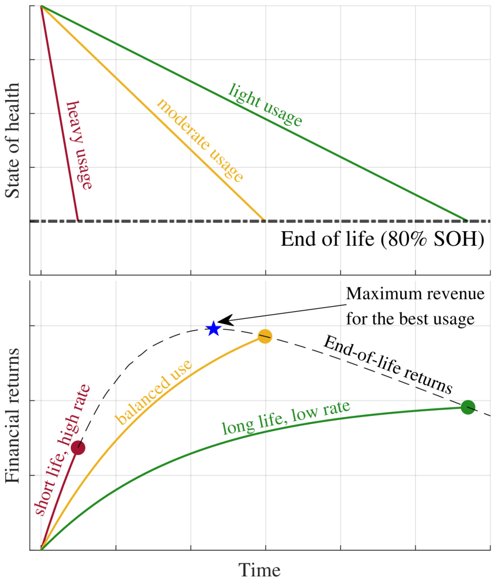
Tender documents increasingly require bidders to guarantee capacity retention over specified periods. A representative tender from India's major procurement body specifies that after five years of installation, available capacity shall not fall below 95% of installation capacity, with vendors required to guarantee this during technical evaluation. Other tenders establish more stringent requirements—European specifications mandate acceptable performance degradation under 20% over the required chronological and cycle lifetime.
These specifications create a critical tension in tender economics. Bidders must choose between three primary strategies: overbuilding capacity from day one to absorb expected degradation, structuring augmentation plans to restore capacity at predetermined intervals, or accepting conservative capacity guarantees that may compromise initial revenue potential. Each strategy carries distinct financial implications for tender pricing and project viability.
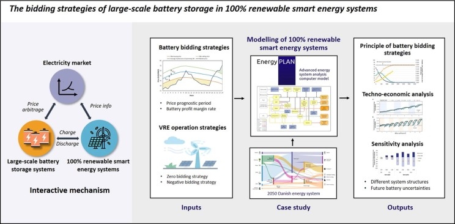
Capacity Warranties and Performance Guarantees: Contractual Distinctions
Tender documents and subsequent PPAs increasingly distinguish between degradation warranties and performance guarantees—a distinction with profound economic implications. A degradation warranty from the original equipment manufacturer (OEM) guarantees that battery state of health (SoH) will not degrade below a specified threshold, typically expressed as retained energy capacity. For example, a warranty might guarantee 80% capacity retention after 10 years. If degradation exceeds this rate, the OEM bears responsibility for replacing affected modules or providing financial compensation.
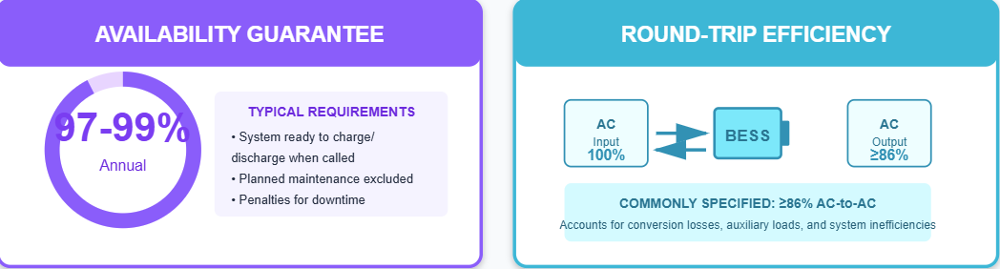
Performance guarantees, conversely, represent broader commitments from system integrators or EPC contractors ensuring the entire BESS meets specific operational targets, including availability guarantees (typically 97-99% annual availability) and round-trip efficiency minimums (commonly 86% AC-to-AC). This distinction becomes economically significant because it allocates aging-related financial risk differently between component suppliers and system integrators.
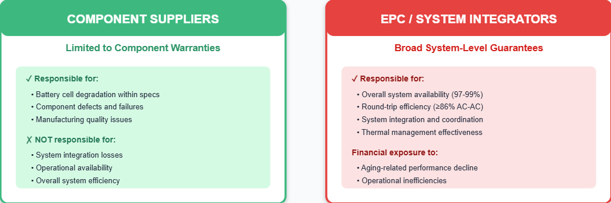
PPAs increasingly layer these protections. A representative service level agreement requires BESS suppliers to maintain usable energy capacity according to guaranteed degradation curves, with suppliers bearing costs for corrective measures like augmentation or module replacement if actual degradation exceeds contracted levels. This arrangement shifts aging risk toward suppliers but increases bid costs as suppliers must account for potential augmentation expenses.
Impact on PPA Revenue Economics
Battery aging directly reduces revenue generation in multi-use BESS projects, fundamentally affecting PPA pricing and bankability. A battery operating at 80% of original capacity generates proportionally lower revenues across energy arbitrage, capacity market participation, and ancillary service offerings, creating a revenue haircut that lenders view as threatening debt repayment ability.
Consider the economic mathematics: a 100 MW/400 MWh BESS may generate significant arbitrage revenues through buying low and selling high in day-ahead markets. However, if the system degrades to 80 MWh usable capacity by year five while maintaining the same contract terms, daily cycling flexibility diminishes, reducing both energy arbitrage opportunities and frequency regulation service revenues. The economic loss extends beyond mere proportional reduction—degraded systems often cannot efficiently stack multiple revenue streams simultaneously, further depressing returns.
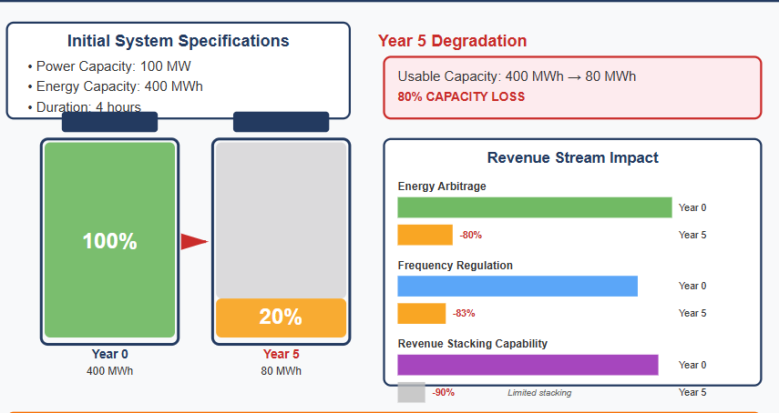
This revenue degradation becomes especially acute in merchant projects relying on volatile energy arbitrage. Research on arbitrage operations in Spanish markets demonstrates that degradation modeling uncertainty significantly impacts long-term profitability projections, particularly when cash flows depend heavily on available battery capacity. The consideration of degradation uncertainty proves especially crucial in evaluations with long time horizons and low discount rates—precisely the conditions typical for 15-year PPA structures common in European capacity markets.
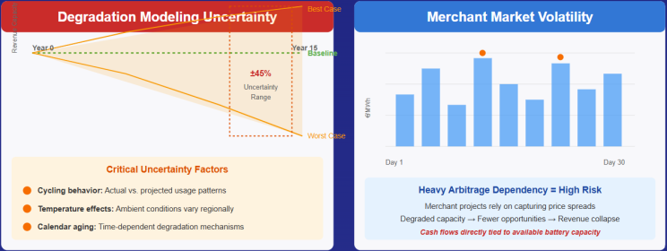
The economic effect varies by market structure and PPA configuration. Hybrid projects with co-located renewable generation may benefit from relative stability in energy arbitrage patterns, while standalone BESS projects face heightened revenue volatility from aging combined with market volatility. This distinction increasingly influences tender evaluation scoring, with hybrid projects often receiving more favorable financing terms and lower cost of capital due to reduced aging-related revenue uncertainty.
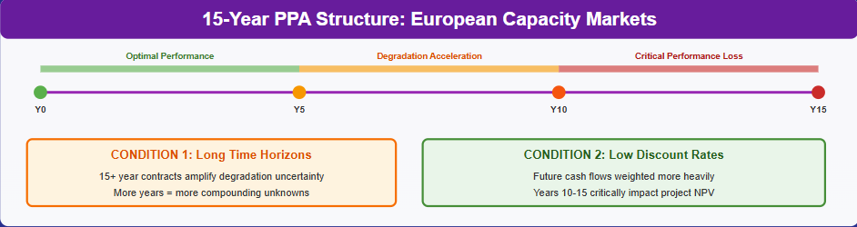
Tender Bidding Strategies: Overbuilding Versus Augmentation
How bidders structure aging management directly determines competitiveness and profitability in tender awards. Overbuilding—installing 15-30% additional capacity upfront—locks in current manufacturing prices while creating degradation buffers that protect long-term revenue streams. This strategy appeals particularly to projects with long-term contracted revenue streams where price certainty brings premium value.
The economic calculus for overbuilding involves comparing current battery costs against projected future costs and augmentation expenses. With battery storage costs declining 80% since 2015 (2024 levelized storage costs for 2-hour duration estimated at INR 1.7 million/MWh in India), future price projections significantly influence bidding decisions. If battery costs continue declining, early overbuild strategies capture value; conversely, if costs stabilize, augmentation timing becomes more flexible.

Periodic augmentation—adding capacity at predetermined intervals to compensate for degradation—requires lower upfront capital but introduces future construction costs, permitting complexity, and operational disruption risks. Projects utilizing augmentation must quantify augmentation timing based on degradation curves, with uncertainty in degradation rates (driven by operational choices, thermal management, and cycling frequency) creating financial planning challenges.
Tender response requirements increasingly specify these choices explicitly. Bidders must state whether they'll meet performance requirements through oversizing, whether augmentation will be performed (with detailed cost proposals), or through battery replacement during contract periods (repowering). This transparency allows tender evaluators to assess total cost of ownership across 10-20 year PPA terms, incorporating explicit aging management costs rather than relegating aging to hidden contingencies.
Bankability Implications: Aging as a Core Risk Factor
Battery degradation and performance uncertainty historically represented BESS sector bankability constraints, though the landscape has evolved significantly. Modern institutional lenders increasingly accept BESS as bankable assets provided aging risks are adequately addressed through contractual mechanisms and performance insurance.
Performance insurance products demonstrably improve credit ratings, with documented cases showing insurance raising project ratings from non-investment grade to BBB, substantially lowering borrowing costs. These insurance products specifically protect against capacity degradation exceeding contracted thresholds, effectively monetizing the aging risk that tender specifications define.
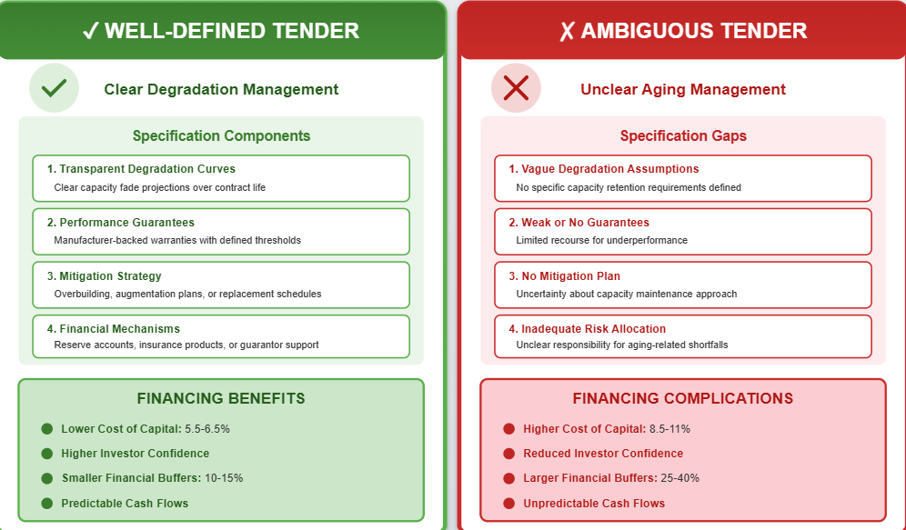
Tender specifications that clearly articulate acceptable degradation curves and establish transparent performance guarantees reduce financing costs by improving investor confidence in long-term cash flow predictability. Projects with well-defined degradation management strategies (whether through overbuilding, augmentation, or manufacturer guarantees) command lower cost of capital than projects with ambiguous aging management approaches.
Conversely, tenders that inadequately address aging economics face financing complications. Banks require appropriate financial buffers to absorb aging-related revenue shortfalls, particularly for merchant projects where revenue streams from multiple services experience simultaneous reduction when capacity declines. The buffer sizing depends directly on perceived revenue volatility and geographic market exposure—merchant projects require substantially larger buffers than contracted projects, effectively raising project costs.
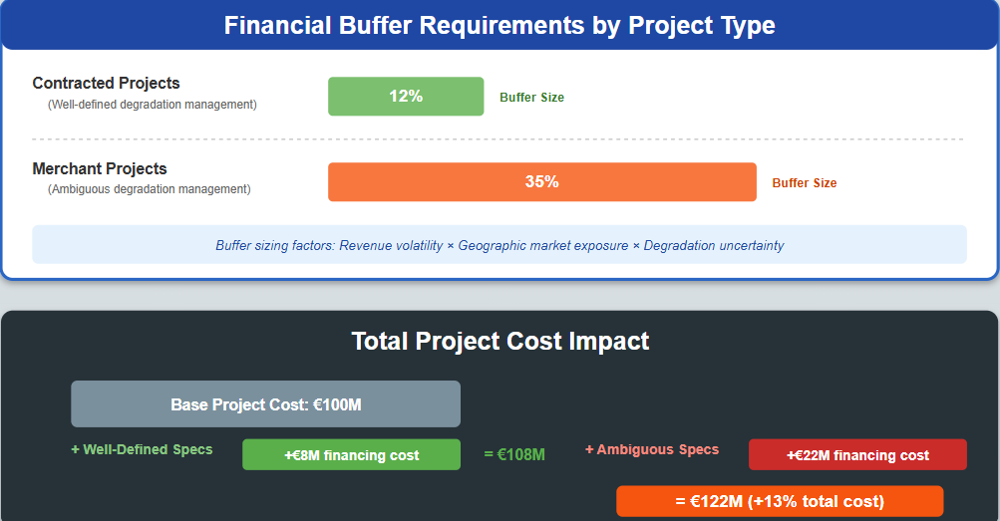
Operational Optimization and Aging Trade-offs
Tender specifications increasingly incorporate operational constraints that affect aging rates, creating complex trade-offs between short-term and long-term economics. Limiting depth of discharge (DoD) through battery management system controls significantly extends cycle life, with batteries discharged only to 50% capacity experiencing substantially longer operational lives than those routinely depleted to 20%. However, this DoD limitation reduces immediate energy availability and revenue generation.
PPAs must balance this tension through explicit operational protocols. Tenders specifying strict DoD limits for capacity retention guarantee compliance ultimately embed operational constraints that reduce daily revenue-generating flexibility. Conversely, tenders permitting aggressive cycling to maximize near-term arbitrage opportunities accelerate aging, introducing earlier capital requirements for augmentation or component replacement.
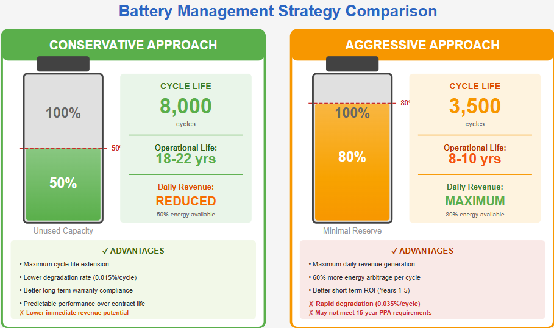
Advanced battery management systems now incorporate predictive capabilities that model future degradation based on actual operational patterns, enabling both operators and financiers to monitor warranty compliance and anticipate augmentation requirements with substantially improved accuracy. This transparency directly reduces aging-related economic uncertainty embedded in PPA pricing.
Regulatory and Financial Assurance Requirements
Emerging regulatory frameworks increasingly mandate explicit financial planning for aging management over extended PPA periods. European regulatory requirements exemplify this evolution—the EU's Battery Regulation (Regulation EU 2023/1542) establishes comprehensive lifecycle requirements covering manufacturing through recycling, with starting provisions in 2025 introducing declaration requirements and performance classes for industrial batteries exceeding 2 kWh. More directly, financial assurance requirements mandate that BESS operators provide financial guarantees—through parent company guaranties, letters of credit, bonds, or alternative instruments—covering estimated recycling and reuse costs exceeding salvage value, with financial assurance required before the 15th anniversary of operations.

These requirements directly influence PPA economics by mandating explicit financial reserves for end-of-life management. Tenders increasingly require bidders to specify whether they'll maintain financial reserves throughout the PPA term or arrange surety instruments, with these costs incorporated into tender price submissions.
Second-Life and Circular Economy Considerations
Accounting for second-life applications in tender economics provides additional nuance to aging analysis. Retired BESS batteries retaining 80% of original capacity often prove suitable for second-life applications requiring lower performance demands. Market projections indicate the global second-life EV battery market will reach $4.2 billion by 2035, with Europe currently dominating repurposing activities.
This second-life potential reduces effective end-of-life costs and creates salvage value not traditionally incorporated in PPA financial models. Tenders increasingly account for second-life value in total cost of ownership calculations, effectively reducing the economic burden of aging by recognizing residual asset value at PPA termination.
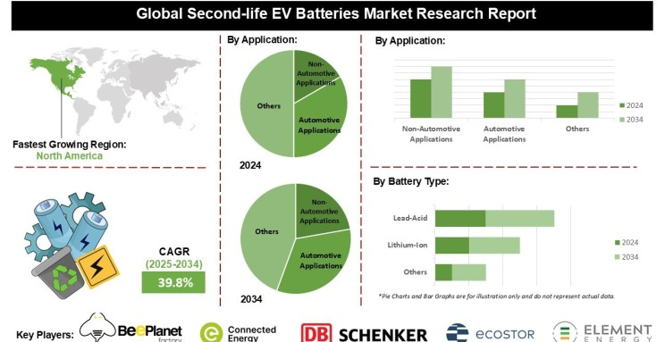
Synthesis and Practical Implications
The influence of battery aging on BESS tender economics and PPA structures reflects fundamental engineering-finance integration. Aging is no longer an externality relegated to warranty fine print but rather a central variable shaping tender competitiveness, financing costs, and contract structure. Bidders must explicitly account for degradation mechanisms (cycle and calendar aging), regional and operational thermal impacts, and contractual risk allocation when developing tender responses.
From a financing perspective, transparent aging management strategies—whether through overbuilding with clear capacity buffers, scheduled augmentation with specified cost provisions, or manufacturer performance insurance—directly reduce cost of capital by improving investor confidence in long-term cash flow predictability. Conversely, inadequate aging risk management increases financing costs through enlarged financial buffer requirements and higher risk premiums.
For tender evaluators, specifications that clearly define acceptable degradation curves, establish transparent performance guarantees with remediation procedures, and require bidders to articulate aging management strategies enable more accurate total cost of ownership comparisons across competing proposals. The distinction between degradation warranties (protecting against OEM-level component failure) and performance guarantees (protecting against system-wide underperformance) ensures appropriate risk allocation and accountability throughout PPA terms.
As the BESS sector matures and deployment accelerates—with global installed storage capacity expected to expand 56% over the next five years, reaching over 270 GW by 2026—aging management excellence increasingly differentiates successful projects from non-bankable ventures. The projects winning tenders at favorable pricing while maintaining financing viability will be those that integrate sophisticated aging analysis into competitive bid development and PPA structuring from inception.